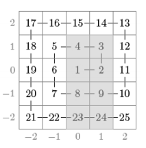

F.A.Qs
Home
Discuss
ProblemSet
Status
Ranklist
Contest
入门OJ
ModifyUser
Xeonacid
Logout
捐赠本站
Notice:
注册本OJ方式请见https://www.lydsy.com/JudgeOnline/wttl/thread.php?tid=5671
Problem 5184. -- [Baltic2016]Spiral
5184: [Baltic2016]Spiral
Time Limit:
30 Sec
Memory Limit:
256 MB
Submit:
2
Solved:
2
[
Submit
][
Status
][
Discuss
]
Description
一个大小为(2n+1)*(2n+1)的方格按照如下方法构造。数字1放在正方形的中间，数字2放在1的右边，接下来的数字
按照逆时针的顺序填充这个方格。你需要计算q个询问的答案，每个询问查询一个矩形内的数的和，结果对10^9+7
取模。比如n=2的方格中，灰色区域的数的和是74：

Input
输入的第一行包含2个整数n,q:方格的大小和询问的数量。
接下来的q行每行包含4个整数x1,y1,x2,y2(-n<=x1<=x2<=n,-n<=y1<=y2<=n)。
表示你要计算的矩形区域的两个角落的坐标为（x1,y1）(x2,y2)
1<=N<=10^9
1<=q<=100
Output
每个询问输出一行答案
Sample Input
2 3
0 -2 1 1
-1 0 1 0
1 2 1 2
Sample Output
74
9
14
HINT
Source
[
Submit
][
Status
][
Discuss
]
HOME
Back